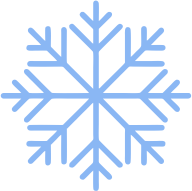

Улӥллям-вылӥллям пересь кузпалъёс. Огпол картэз кышноезлы шуэ, пе: - Пыж-ай мыным колӟо, пересе. - Малэсь бен пыжом? Пызьмы ӧвӧл ни. - Эх, пересе, кеносэз ӵужалты, сусегъёсты куръя - тӥни озьы люкаськоз. Пересь кышно озьы ик кариз: ӵужыса-вуштыса ог кык кырым пызь люказ. Пызьзэ йӧлвылэн котӥз, колӟо ныркиз, вӧй пӧлын пыжиз но сӥятыны укно вылэ понӥз. Отын кылльыса, колӟо акыльтӥз: укно вылысь погыльскиз со мудэт вылэ, мудэт вылысь гуждор вылэ, гуждор вы¬лысь сюрес вылэ. Питыра со сюрес кузя, нош пумитаз луд кеч шеде: «Колӟо, колӟо! Мон тонэ сиё».— «Эн, эн сиы монэ, луд кече, эсьмаса, кылзы-ай, кыӵе кырӟан кырӟало мон тыныд». Кеч пельёссэ чорк-чорк пуктӥз, нош колӟо кырӟаны кутскиз: Мон колӟо, мон колӟо! Кеносысь ӵужемын, Сусегысь куръямын, Йӧлвылэн ныркемын, Гурын пыжемын, Укноын сӥятэмын. Песятайлэсь мон пегӟи, Песянайлэсь мон пегӟи, Тынэсьтыд нош, луд кече, Капчиен мон пегӟо. Колӟо азьпала питырскиз, луд кеч сое ӧз но адӟы ни. Питыра колӟо тэль пала, нош пумитаз пурысь кион лыктэ: «Колӟо, колӟо! Мон тонэ сиё».— «Эн си монэ, пурысь кион, мон тыныд кырӟан кырӟало». Кутскиз со кырӟаны: Мон колӟо, мон колӟо! Кеносысь ӵужемын, Сусегысь куръямын, Йӧлвылэн ныркемын, Гурын пыжемын, Укноын сӥятэмын. Песятайлэсь мон пегӟи, Песянайлэсь мон пегӟи, Луд кечлэсь мон пегӟи, Тынэсьтыд но, кион, Капчиен мон пегӟo. Колӟо азьпала питырскиз, кион сое ӧз но адӟы ни. Питыра колӟо тэлетӥ, нош пумитаз гондыр лыктэ, кӧс улваез тӥя, куакъёсты някыръя: «Колӟо, колӟо! Мон тонэ сиё». - Я, тон-а, кырыж кук, монэ сиыны шедьтод! Эн ик малпа! Эсьмаса, кылзы-ай мынэсьтым кырӟамме.- Колӟо кырӟаны кутскиз, нош гондыр чус-чус кариськиз. Мон колӟо, мон колӟо! Кеносысь ӵужемын, Сусегысь куръямын, Йӧлвылэн ныркемын, Гурын пыжемын, Укноын сӥятэмын. Песятайлэсь мон пегӟи, Песянайлэсь мон пегӟи, Луд кечлэсь мон пегӟи, Кионлэсь но пегӟи; Тынэсьтыд, кырыж кук, Шуг ӧвӧл пегӟыны. Колӟо нош ик погыльскиз, гондыр солэсь пытьызэ гинэ адӟиз на. Колӟо питыра, нош пумитаз ӟичы вадьсаське: «Ӟечбур, колӟое! Кыӵе тон чебер, ӵыжыт бамо!» Колӟо ӟичылэн ушъямезлы шумпотӥз но кырӟаны кутскиз. Нош ӟичы кылзэ но пумен матэ, матэ кариське. Мон колӟо, мон колӟо! Кеносысь ӵужемын, Сусегысь куръямын, Йӧлвылэн ныркемын, Гурын пыжемын, Укноын сӥятэмын. Песятайлэсь мон пегӟи, Песянайлэсь мон пегӟи, Луд кечлэсь мон пегӟи, Кионлэсь но пегӟи, Гондырлэсь но пегӟи; Тынэсьтыд но, ӟичы, Шуг ӧвӧл пегӟыны. «Ой, макем шулдыр кырӟаськод! - шуэ ӟичы.- Только, гыдыке, пересь ини мон - пельы секыт луиз, ляб кылӥсько. Колӟое, пуксьы ныр вылам но кырӟа на огпол». Шумпотӥз колӟо ӟичылэн ушъямезлы. Солэн ныр вылаз пуксиз но выльысь кырӟаны кутскиз: «Мон колӟо, мон колӟо!..» Нош ӟичы сое шап! кутӥз но сииз.
Колӟо
Жили-были старик со старухой. Вот и говорит старик старухе: — Поди-ка, старуха, по коробу поскреби, по сусеку помети, не наскребешь ли муки на колобок. Взяла старуха крылышко, по коробу поскребла, по сусеку помела и наскребла муки горсти две. Замесила муку на сметане, состряпала колобок, изжарила в масле и на окошко студить положила. Колобок полежал, полежал, взял да и покатился — с окна на лавку, с лавки на пол, пó полу к двери, прыг через порог — да в сени, из сеней на крыльцо, с крыльца на двор, со двора за ворота, дальше и дальше. Катится Колобок по дороге, навстречу ему Заяц: — Колобок, Колобок, я тебя съем! — Не ешь меня, Заяц, я тебе песенку спою: Я Колобок, Колобок, Я по коробу скребен, По сусеку метен, На сметане мешон Да в масле пряжон, На окошке стужон. Я от дедушки ушел, Я от бабушки ушел, От тебя, зайца, подавно уйду! И покатился по дороге — только Заяц его и видел! Катится Колобок, навстречу ему Волк: — Колобок, Колобок, я тебя съем! — Не ешь меня, Серый Волк, я тебе песенку спою: Я Колобок, Колобок, Я по коробу скребен, По сусеку метен, На сметане мешон Да в масле пряжон, На окошке стужон. Я от дедушки ушел, Я от бабушки ушел, Я от зайца ушел, От тебя, волк, подавно уйду! И покатился по дороге — только Волк его и видел! Катится Колобок, навстречу ему Медведь: — Колобок, Колобок, я тебя съем! — Где тебе, косолапому, съесть меня! Я Колобок, Колобок, Я по коробу скребен, По сусеку метен, На сметане мешон Да в масле пряжон, На окошке стужон. Я от дедушки ушел, Я от бабушки ушел, Я от зайца ушел, Я от волка ушел, От тебя, медведь, подавно уйду! И опять покатился — только Медведь его и видел! Катится Колобок, навстречу ему Лиса: — Колобок, Колобок, куда катишься? — Качусь по дорожке. — Колобок, Колобок, спой мне песенку! Колобок и запел: Я Колобок, Колобок, Я по коробу скребен, По сусеку метен, На сметане мешон Да в масле пряжон, На окошке стужон. Я от дедушки ушел, Я от бабушки ушел, Я от зайца ушел, Я от волка ушел, От медведя ушел, От тебя, лисы, нехитро уйти! А Лиса говорит: — Ах, песенка хороша, да слышу я плохо. Колобок, Колобок, сядь ко мне на носок да спой еще разок, погромче. Колобок вскочил Лисе на нос и запел погромче ту же песенку. А Лиса опять ему: — Колобок, Колобок, сядь ко мне на язычок да пропой в последний разок. Колобок прыг Лисе на язык, а Лиса его — гам! — и съела.
Колобок
Русская народная сказка
Ӟуч калык выжыкыл
